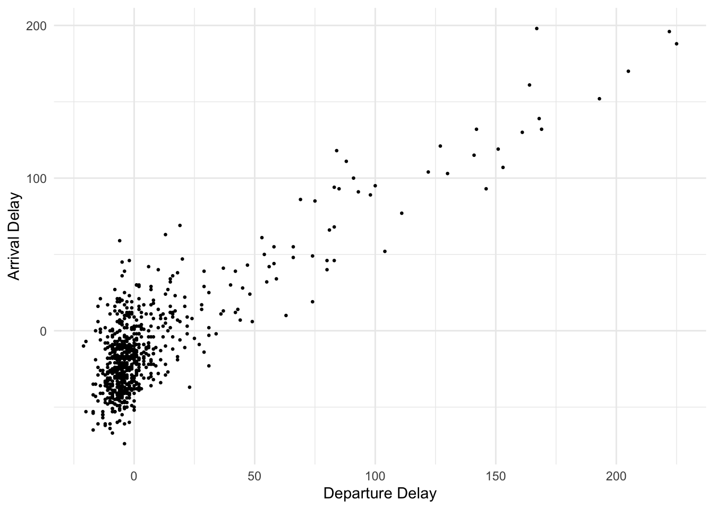
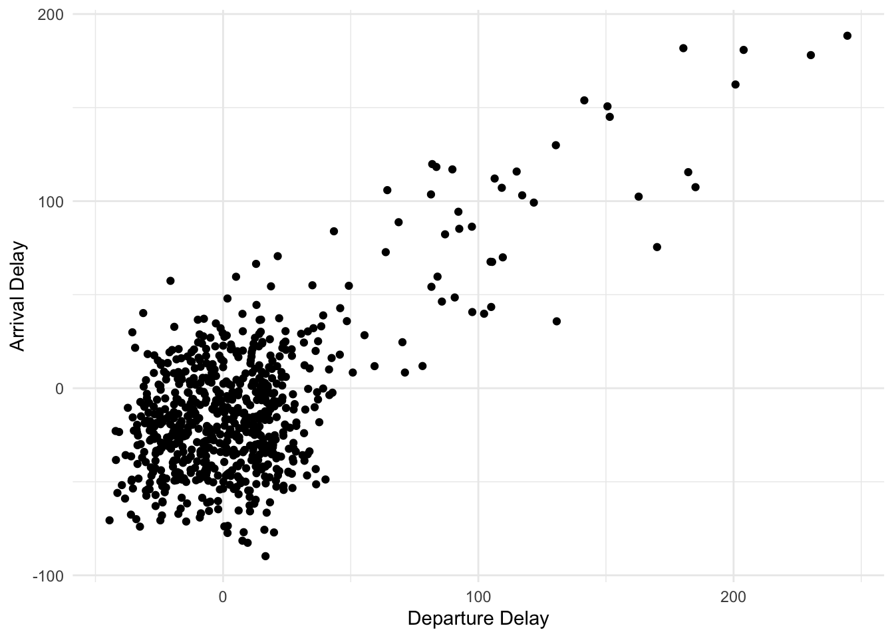
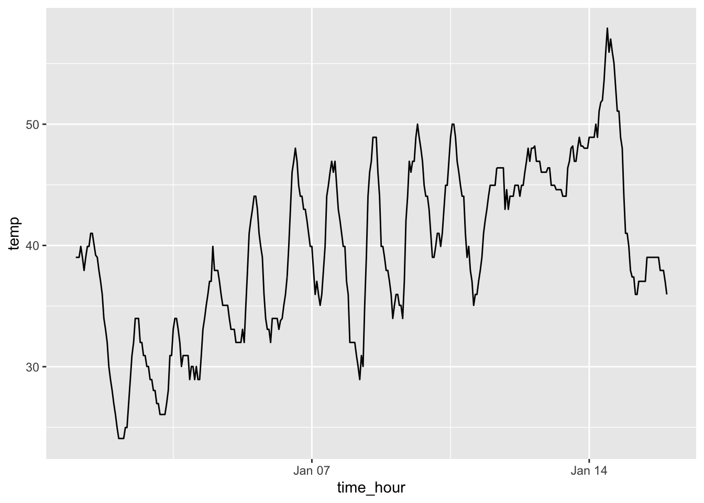
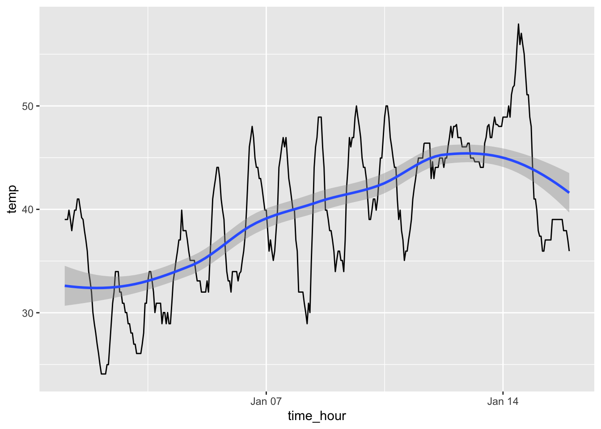
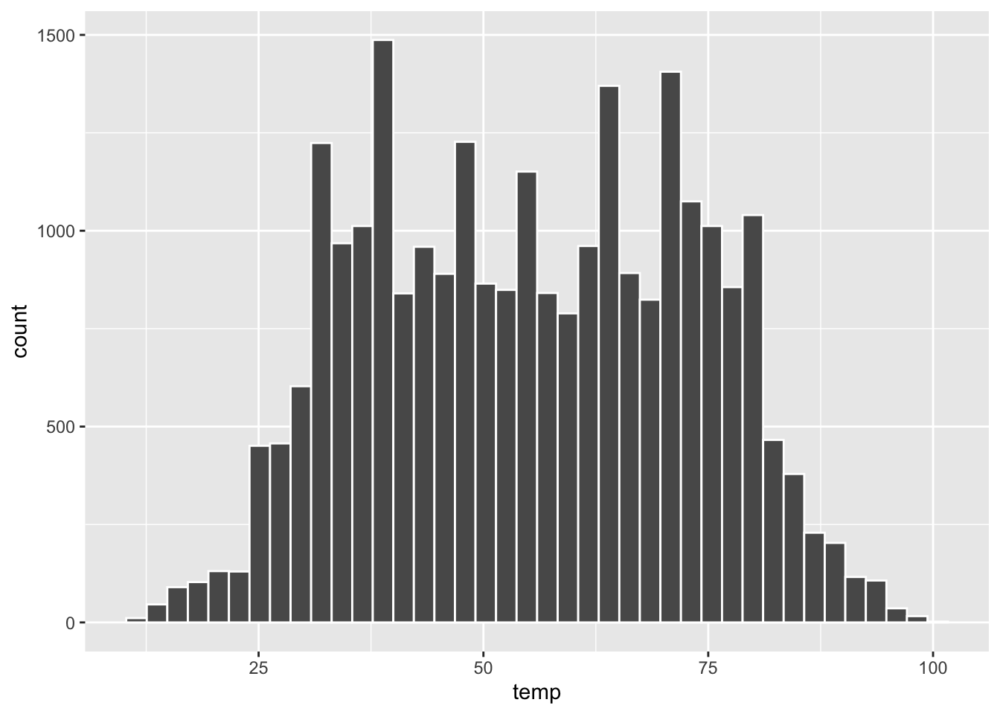
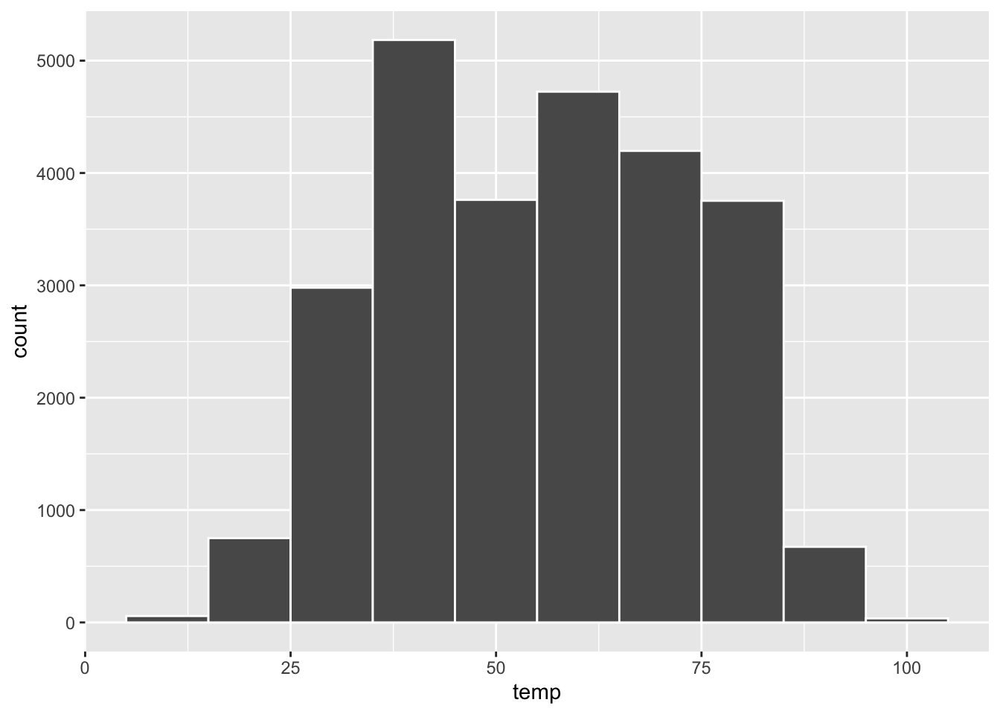
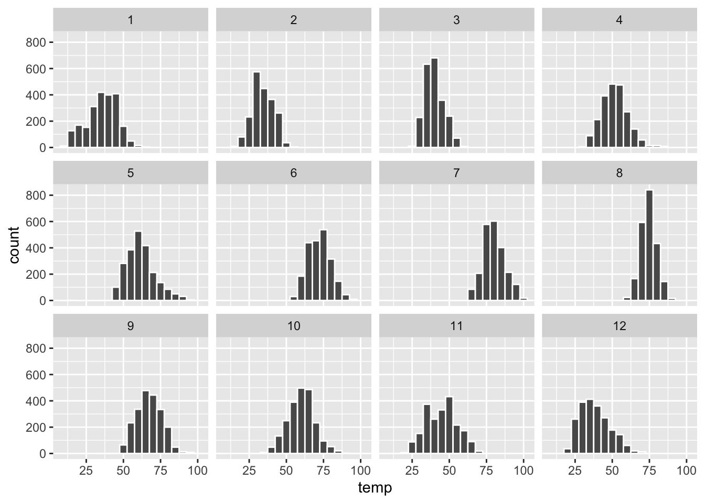
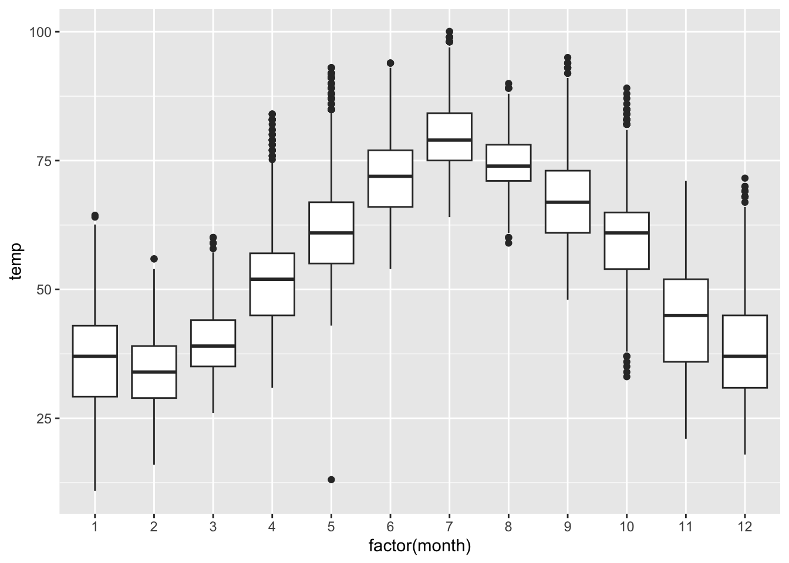
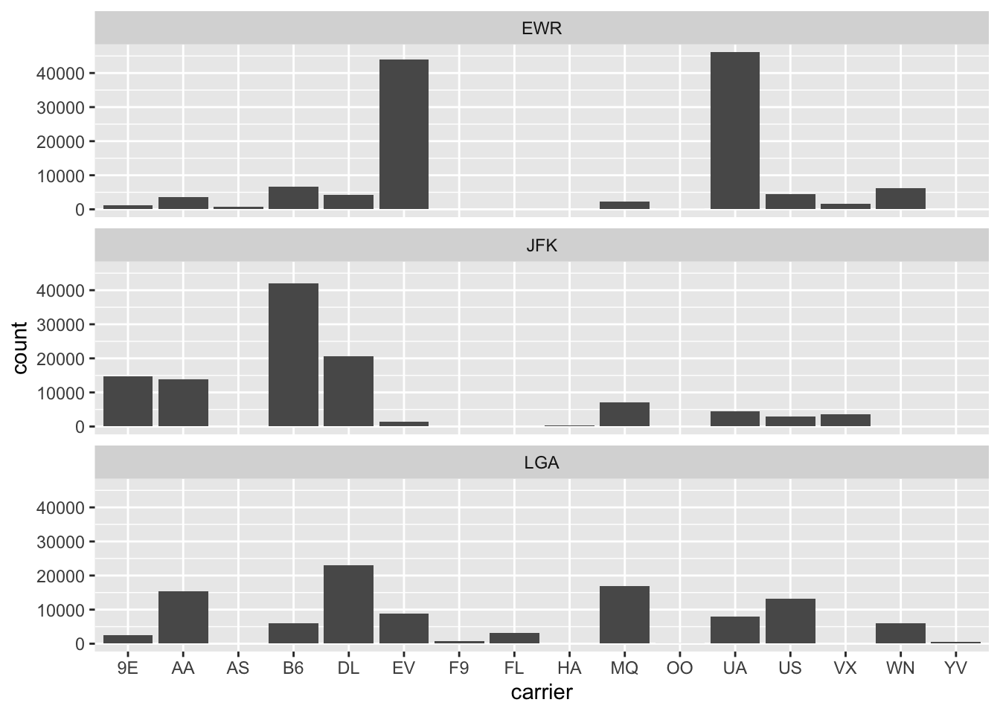

# Like an app on your smart phone, getting a package to work in R Studio involves two steps:
# 1. Installing the package and 2. loading the package
# 1. Install the packages we'll need for today's data session
# Note: Once you install a package once, you do NOT need to install it again
#install.packages("nycflights13")
#install.packages("ggplot2")
#install.packages("moderndive")
#install.packages("poliscidata")
# 2. Load the packages. Once we do this, they will be operative for this data session.
# Note: Everytime you close R Studio and reopen it, you have to load the packages again.
# That's why it's always good to load packages first on a script file like this.
library(nycflights13)
library(ggplot2)
library(moderndive)
library(poliscidata)Registered S3 method overwritten by 'gdata':
method from
reorder.factor gplots# Datasets in nycflights13 and moderndive are stored in R when you load them like we did above.
# But you can also store them as a data object that appears in your workspace.
# Let's save the "flights" data as data object called "f". We do not HAVE to do this, however.
f <- flights
##################################### The 5NG ########################################
######################################################################################
################################## 1. Scatterplots ##################################
######################################################################################
# Alaska data (from moderndive package); let's view it first
#View(alaska_flights)
# Variable descriptions
#?alaska_flights
# Relationship between departure delay and arrival delay. Which is the independent variable?
# Dependent variable?
# Basic scatterplot; note how the plus sign separates differet arguments.
# Note how the three elements of "grammar of graphics" are implemented with ggplot.
# The geometry name for a scatterplot is "geom_point"
ggplot(data = alaska_flights, mapping = aes(x = dep_delay, y = arr_delay)) +
geom_point()Warning: Removed 5 rows containing missing values (`geom_point()`).
# What sort of relationship do we visualize? How do we *communicate* this?
# We can add different features, which we'll do throughout the semester.
# Let's add more informative labels for y and x axis
ggplot(data = alaska_flights, mapping = aes(x = dep_delay, y = arr_delay)) +
geom_point() +
labs(x="Departure Delay", y="Arrival Delay")Warning: Removed 5 rows containing missing values (`geom_point()`).
# Let's say we wanted a white background in the plot
ggplot(data = alaska_flights, mapping = aes(x = dep_delay, y = arr_delay)) +
geom_point() +
labs(x="Departure Delay", y="Arrival Delay") +
theme_minimal()Warning: Removed 5 rows containing missing values (`geom_point()`).
# Transparent dots
ggplot(data = alaska_flights, mapping = aes(x = dep_delay, y = arr_delay)) +
geom_point(alpha = 0.2) +
labs(x="Departure Delay", y="Arrival Delay") +
theme_minimal()Warning: Removed 5 rows containing missing values (`geom_point()`).
# Make dots smaller
ggplot(data = alaska_flights, mapping = aes(x = dep_delay, y = arr_delay)) +
geom_point(size=.5) +
labs(x="Departure Delay", y="Arrival Delay") +
theme_minimal()Warning: Removed 5 rows containing missing values (`geom_point()`).
# "Jitter" the points -- good option if there are many overlaps
ggplot(data = alaska_flights, mapping = aes(x = dep_delay, y = arr_delay)) +
geom_jitter(width = 30, height = 30) +
labs(x="Departure Delay", y="Arrival Delay") +
theme_minimal()Warning: Removed 5 rows containing missing values (`geom_point()`).
######################################################################################
################################## 2. Linegraphs ##################################
######################################################################################
# We'll use the "early_january_weather" data from moderndive package
#View(early_january_weather)
#?early_january_weather
# Let's plot temperatures ("temp") in Jan. against time ("time_hour")
# The geometry for a linegraph is "geom_line"
ggplot(data = early_january_weather, mapping = aes(x = time_hour, y = temp)) +
geom_line()
# We can also combine a linegraph and scatterplot
ggplot(data = early_january_weather, mapping = aes(x = time_hour, y = temp)) +
geom_line() +
geom_point()
# One other cool graph is a "line smoother" to visualize the trend in a more effective way
ggplot(data = early_january_weather, mapping = aes(x = time_hour, y = temp)) +
geom_line() +
geom_smooth()`geom_smooth()` using method = 'loess' and formula = 'y ~ x'
######################################################################################
################################## 3. Histograms ##################################
######################################################################################
# We'll use the "weather" data from nycflights13 package;
# Hourly meterological data for LGA, JFK and EWR.
# We want to visualize the distribution of a single variable with a histogram; these are ideal
# for "continuous" variables with lots of values.
#View(weather)
#?weather
# We'll focus on temperatures ("temp") at these three airports
# Note: geometry for a histogram is "geom_histogram"
ggplot(data = weather, mapping = aes(x = temp)) +
geom_histogram()`stat_bin()` using `bins = 30`. Pick better value with `binwidth`.Warning: Removed 1 rows containing non-finite values (`stat_bin()`).
# Too clumpy; let's delineate the bars some more
ggplot(data = weather, mapping = aes(x = temp)) +
geom_histogram(color = "white")`stat_bin()` using `bins = 30`. Pick better value with `binwidth`.Warning: Removed 1 rows containing non-finite values (`stat_bin()`).
# We can also adjust the "bins" or the width of the bars; more or less fine-grained
ggplot(data = weather, mapping = aes(x = temp)) +
geom_histogram(bins = 40, color = "white")Warning: Removed 1 rows containing non-finite values (`stat_bin()`).
ggplot(data = weather, mapping = aes(x = temp)) +
geom_histogram(binwidth = 10, color = "white")Warning: Removed 1 rows containing non-finite values (`stat_bin()`).
# Why would want to do this?
# Facets! These are very cool for subsetting by some grouping
ggplot(data = weather, mapping = aes(x = temp)) +
geom_histogram(binwidth = 5, color = "white") +
facet_wrap(~ month)Warning: Removed 1 rows containing non-finite values (`stat_bin()`).
######################################################################################
################################## 4. Boxplots ##################################
######################################################################################
# Boxplots are another way to visualize the distribution of a single variable. These are
# again ideal for "continuous" variables with lots of values.
# What do boxplots give us exactly? "Low", 25th pctile, 50th pctile (median), 75th pctile,
# and "high"; and outliers.
# Let's again use the weather data to describe temperature by month.
# Geometry for boxplot is "geom_boxplot"
# We need to treat month as a "factor" or categorical variable instead of a continuous
# variable. We'll talk more about this distinction later in the class.
ggplot(data = weather, mapping = aes(x = factor(month), y = temp)) +
geom_boxplot()Warning: Removed 1 rows containing non-finite values (`stat_boxplot()`).
# Interpretation: "The 'whiskers' are set to extend out no more than 1.5 × IQR (75th minus 25th)
# units away from either end of the boxes. We say 'no more than' because the ends of the
# whiskers have to correspond to observed temperatures."
# Note that the dots outside the whiskers are "outliers."
######################################################################################
################################## 5. Barplots ##################################
######################################################################################
# Barplots are ideal for visualizing the spread of a "categorical" variable with few
# values. This is related to a frequency distribution.
# Let's use the flights data from nycflights13 to examine the frequency of flights by
# carrier.
# Let's use the "carrier" variable.
#?flights
#View(flights)
# We could get a frequency distribution in table form using the
# "freq" command from the poliscidata package.
freq(flights$carrier)
flights$carrier
Frequency Percent
9E 18460 5.481e+00
AA 32729 9.718e+00
AS 714 2.120e-01
B6 54635 1.622e+01
DL 48110 1.429e+01
EV 54173 1.609e+01
F9 685 2.034e-01
FL 3260 9.680e-01
HA 342 1.016e-01
MQ 26397 7.838e+00
OO 32 9.502e-03
UA 58665 1.742e+01
US 20536 6.098e+00
VX 5162 1.533e+00
WN 12275 3.645e+00
YV 601 1.785e-01
Total 336776 1.000e+02# Now ggplot; geometry for bar graph is "geom_bar"
ggplot(data = flights, mapping = aes(x = carrier)) +
geom_bar()
# Stacked bar graphs; let's say you wanted to break down by origin (EWR, JFK, or LGA)
ggplot(data = flights, mapping = aes(x = carrier, fill = origin)) +
geom_bar()
# Stacked bar graphs; let's say you wanted to break down by origin (EWR, JFK, or LGA)
ggplot(data = flights, mapping = aes(x = carrier, fill = origin)) +
geom_bar(position = "dodge")
# We could also facet wrap
ggplot(data = flights, mapping = aes(x = carrier)) +
geom_bar() +
facet_wrap(~ origin, ncol = 1)